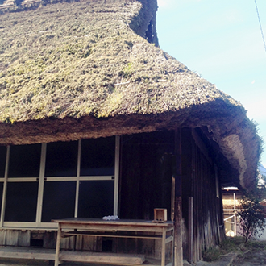
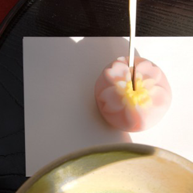

- 銀座本店
- しばた日本橋店
- しばた京都支店
- 
銀座本店の詳しい情報
| 営業時間 | AM 9：00〜PM18：00(年中無休) |
|---|---|
| お問合わせ | 03-1234-5678 |
| 所在地 | 〒104-0061 東京都中央区銀座四丁目12-15 |
| アクセス | 都営浅草線 都営銀座線東銀座駅から徒歩1分 |
日本橋支店の詳しい情報
| 営業時間 | AM 9：00〜PM18：00(年中無休) |
|---|---|
| お問合わせ | 03-1234-5678 |
| 所在地 | 〒103-8265 東京都中央区日本橋2丁目4番1号 高島屋 1F |
| アクセス | 都営浅草線 都営銀座線日本橋駅から徒歩4分 |
- 
京都支店の詳しい情報
| 営業時間 | AM 9：00〜PM18：00(年中無休) |
|---|---|
| お問合わせ | 03-1234-5678 |
| 所在地 | 〒600-8216 京都府京都市下京区 烏丸通七条下ル東塩小路町721-1 |
| アクセス | JR京都駅から徒歩2分 |